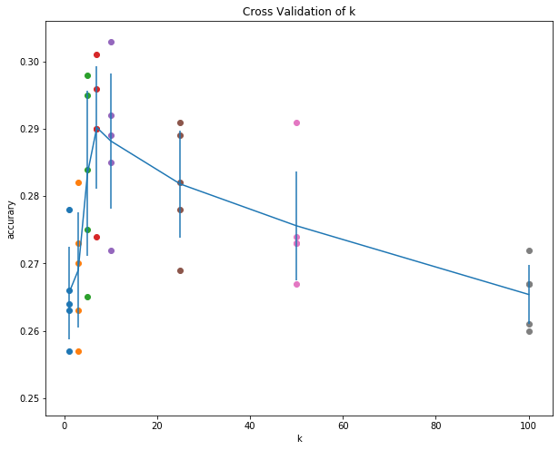

KNN算法预测CIFAR(01)
根据KNN的原理，实现KNN模型，加深对KNN的理解。
依赖加载
import numpy as np
import matplotlib.pyplot as plt
from collections import Counter
import pickle
import os
# 设置默认的图片大小
plt.rcParams['figure.figsize'] = (10.0, 8.0)
plt.rcParams['image.cmap'] = 'gray'
plt.rcParams['image.interpolation'] = 'nearest'
def relative_error(x, y):
'''计算x与y之间的相对误差，x与y可以是数值，也可以是数组'''
return np.max(np.abs(x - y) / (np.maximum(1e-8, np.abs(x) + np.abs(y))))
数据加载
由于CIFAR默认的格式为二进制格式，不能使用常规的文件读取进行解码。
np.concatenate() 类似于 np.c_ or np.r_ 用来合并数据。
数据加载函数
def unpickle(file_name):
'''解码数据'''
with open(file_name, 'rb') as f:
d = pickle.load(f, encoding='bytes')
return d
def load_data_batch(file_name):
'''The CIFAR DATA is a 10000x3072 numpy array of uint8s. Each row of the array
stores a 32x32 colour image. The first 1024 entries contain the red channel
values, the next 1024 the green, and the final 1024 the blue. The image is
stored in row-major order, so that the first 32 entries of the array are the
red channel values of the first row of the image. 每一个图片都具有3层，分别
代表RGB。而数组中的每一行储存一个图片，其中前1024各值代表图片的红色层，而接
着为绿色值，最后1024个值为蓝色。因此可以将图片重设成(3, 32, 32)，再经过装置
成(32, 32, 3)就是我们常见的宽 X 高 X 深度。
labels is a list of 10000 numbers in the range 0-9. The number at index i
indicates the label of the ith image in the array data.
'''
d = unpickle(file_name)
print(d.keys())
X = d[b'data']
Y = d[b'labels']
X = X.reshape(10000, 3, 32, 32).transpose(0, 2, 3, 1).astype('float')
Y = np.array(Y)
return X, Y
def load_CIFAR_data(CIFAR_path):
'''加载CIFAR数据，并将小批量的数据合并在一起。'''
xs = []
ys = []
for b in range(1, 6):
f = os.path.join(CIFAR_path, 'data_batch_%d' % b)
X, Y = load_data_batch(f)
xs.append(X)
ys.append(Y)
Xtr = np.concatenate(xs)
Ytr = np.concatenate(ys)
del X, Y
f = os.path.join(CIFAR_path, 'test_batch')
Xte, Yte = load_data_batch(f)
return Xtr, Ytr, Xte, Yte
def get_CIFAR_data(num_training=49000, num_validation=1000, num_test=1000,
subtract_mean=True):
'''
整个CIFAR共有60000张图片，其中50000作为训练集，1000作为测试集。对加载的数据
进行预处理操作，并返回字典形式。
'''
cifar_dir = "/home/luhuaei/Data/cifar-10-batches-py/"
X_train, Y_train, X_test, Y_test = load_CIFAR_data(cifar_dir)
xtrain = X_train[:num_training]
ytrain = Y_train[:num_training]
xtest = X_test[:num_test]
ytest = Y_test[:num_test]
xvalidation = X_train[num_training:num_training + num_validation]
yvalidation = Y_train[num_training:num_training + num_validation]
if subtract_mean:
mean_image = np.mean(xtrain, axis=0)
xtrain -= mean_image
xvalidation -= mean_image
xtest -= mean_image
xtrain = xtrain.transpose(0, 3, 1, 2).copy()
xtest = xtest.transpose(0, 3, 1, 2).copy()
xvalidation = xvalidation.transpose(0, 3, 1, 2).copy()
return {
'x_train': xtrain, 'y_train': ytrain,
'x_validation': xvalidation, 'y_validation': yvalidation,
'x_test': xtest, 'y_test': ytest
}
加载数据
将数据集变成一个2维的矩阵。选取前面的5000作为训练集，1000作为验证集，1000作为测
试集。一些模型需要用到2维的数据形式。 np.prod() 为将元素累积。
DATA = get_CIFAR_data() X_train = DATA['x_train'] Y_train = DATA['y_train'] X_test = DATA['x_test'] Y_test = DATA['y_test'] X_vali = DATA['x_validation'] Y_vali = DATA['y_validation'] X_train2d = X_train.reshape(X_train.shape[0], np.prod(X_train.shape[1:])) X_test2d = X_test.reshape(X_test.shape[0], np.prod(X_test.shape[1:])) X_vali2d = X_vali.reshape(X_vali.shape[0], -1)
可视化数据
np.flatnonzero() 将函数变平，并返回非零元素的索引。
classes = ['plane', 'car', 'bird', 'cat', 'deer', 'dog', 'frog', 'horse', 'ship', 'truck']
num_classes = len(classes)
sample_per_class = 7
for y_index, cls in enumerate(classes):
# 返回index对应的类的数据，并利用np.flatnonzero()变平。
idxs = np.flatnonzero(Y_train == y_index)
# 不放回抽取指定个数样本，
idxs = np.random.choice(idxs, sample_per_class, replace=False)
for i, idx in enumerate(idxs):
# 这里图片展示成7x10，计算图片出现的位置
# i * num_classes计算行数，y_index + 1计算列数
img_index = i * num_classes + y_index + 1
plt.subplot(sample_per_class, num_classes, img_index)
plt.imshow(X_train[idx].astype('uint8'))
plt.axis('off')
# 设置图片的类名
if i == 0:
plt.title(cls, color='green')
plt.show()
K最近邻
近邻算法
利用近邻算法对图片进行分类，由于图片一般具有三个channael，这里是利用两个图片进行 相减后取绝对值(L1)或者是相减后取平方在开方，对结果矩阵元素进行相加，得到两者之间 的距离。
class NearesNeighbor():
def __init__(self, method="L1"):
self.method = method
def train(self, x_train, y_train):
self.x_train = x_train
self.y_train = y_train
def predict(self, x_pred):
out_num = x_pred.shape[0]
out = np.zeros(out_num, dtype=self.y_train.dtype)
for i in range(out_num):
# 所有训练样本都对当前的样本矩阵相减，并对结果每一列(axis=1)累加
# 得到一个二维的矩阵(x_train_num, 1)
if self.method == "L1":
distance = np.sum(np.abs(self.x_train - x_pred[i, :]), axis=1)
if self.method == "L2":
distance = np.sqrt(np.sum(np.square(self.x_train - x_pred[i, :]), axis=1))
# 寻找最小距离的位置
min_index = np.argmin(distance)
# 将当前的测试样本标记为最小距离对应的训练样本标签
out[i] = self.y_train[min_index]
print(i)
return out
k近邻算法
The idea is very simple: instead of finding the single closest image in the training set, we will find the top k closest images, and have them vote on the label of the test image.
从直觉上，选择的类越多，分类器受异常值的影响就越少。
如何选择k？
在机器学习上，对于一些无法确定的参数，称为超参数(hyperparameters)。不能使用测试 集数据来改进超参数的，这会产生过拟合(overfit)，测试集应该只用于最后最后一步。
Evaluate on the test set only a single time, at the very end.
正确的调节参数的做法，应该为将数据分为测试集(test set)，以及训练集(train set)， 其中训练集又可以分出一部分数据为验证集(validation set)。使用验证集进行调参，得到 最终模型后，再用于测试集。
对于小数据集来说，分割出来的验证集与训练集数据量都很小，可以使用交叉验证方法 (cross-validation)。对于一个5折叠(fold)的交叉验证来说，将整个训练集等分为5份，使 用其中4份作为训练，1份作为验证集。
Cross Validation
将数据进行切割，返回一个列表，在python中，两个列表进行相加求值为将两个列表进行合 并。
def cross_validation(Xtr, Ytr, ks, folds, classifier):
xtrf = np.split(Xtr, folds)
ytrf = np.split(Ytr, folds)
num_split = Xtr.shape[0] / folds
k_acc = {}
for ik, k in enumerate(ks):
acc = np.zeros(folds, dtype=np.float)
for i in range(folds):
train = np.concatenate((xtrf[:i] + xtrf[i+1:]))
label = np.concatenate((ytrf[:i] + ytrf[i+1:]))
classifier.train(train, label)
pred = classifier.predict(xtrf[i], k)
acc[i] = np.mean(pred == ytrf[i])
k_acc[k] = acc
return k_acc
算法实现
class KNearesNeighbor():
def __init__(self, method='L2', loop_way=0):
self.method = method
self.loop_way = loop_way
def train(self, x_train, y_train):
self.x_train = x_train
self.y_train = y_train
def predict(self, x_pred, k):
self.k = k
if self.loop_way == 0:
distance = self.predict_no_loop(x_pred)
if self.loop_way == 1:
distance = self.predict_one_loop(x_pred)
if self.loop_way == 2:
distance = self.predict_two_loop(x_pred)
return self.predict_label(distance)
def predict_no_loop(self, x_pred):
'''x_pred 为需要预测的X，返回距离矩阵'''
xth, xtw = self.x_train.shape
xph, xpw = x_pred.shape
distance = np.zeros((xph, xth))
# 这里利用numpy中当一个矩阵减去一个数组或者一个数值减去一个数组时，数组
# 中每一个值都会被应用，如(5, 1) - (2, 1)表示成5个数值减去一个2维的数值，
# 将会得到(5, 2)，在numpy中会将(2, 1)装置成(1, 2)，从而(5, 1) - (1, 2)得到一个5x2的矩阵，
# 如果一个矩阵是显式指定为(5,1)另一个显式指定为(2, 1)相加将会出错
if self.method == 'L1':
distance = np.abs(np.sum(x_pred, axis=1).reshape(xph, 1)
- np.sum(self.x_train, axis=1).reshape(1, xth))
if self.method == 'L2':
distance = np.sqrt(np.sum(x_pred**2, axis=1).reshape(xph, 1)
+ np.sum(self.x_train**2, axis=1).reshape(1, xth) # 这里要么不要reshape(xth, -1)，要么指定为(1, xth)否则出错
- 2 * x_pred.dot(self.x_train.T))
return distance
def predict_one_loop(self, x_pred):
'''x_pred 为需要预测的X，返回距离矩阵'''
xph = x_pred.shape[0]
# 训练集的样本个数，这里因为整个训练集样本都对测试集中的每一个图片遍历
xth = self.x_train.shape[0]
distance = np.zeros((xph, xth))
for i in range(xph):
# 所有训练样本都对当前的样本矩阵相减，并对结果每一列(axis=1)累加
# 得到一个二维的矩阵(num, 1)
if self.method == "L1":
distance[i] = np.sum(np.abs(self.x_train - x_pred[i]), axis=1)
if self.method == "L2":
distance[i] = np.sqrt(np.sum(np.square(self.x_train - x_pred[i]), axis=1))
return distance
def predict_two_loop(self, x_pred):
'''x_pred 为需要预测的X，返回距离矩阵'''
xth, xtw = self.x_train.shape
xph, xpw = x_pred.shape
distance = np.zeros((xph, xth))
for y in range(xph):
for x in range(xth):
if self.method == 'L1':
distance[y, x] = np.sum(np.abs(self.x_train[x] - x_pred[y]))
if self.method == 'L2':
distance[y, x] = np.sqrt(np.sum(np.square(self.x_train[x] - x_pred[y])))
return distance
def predict_label(self, distance):
out_num = distance.shape[0]
out = np.zeros(out_num)
for i in range(out_num):
top_k_index = np.argsort(distance[i])[:self.k]
top_k_label = self.y_train[top_k_index]
# 从几个标签中选择最多投票(出现最多)的标签
vote = Counter(top_k_label)
# 返回一个列表，列表中为元组，元组第一个元素为标签，第二个为出现的次数
count = vote.most_common()
out[i] = count[0][0]
return out
优缺点
优点
容易实现，简单理解。更适用于二维的数据。
缺点
计算量大，耗时长，每测试一个样本，都需要遍历整个训练集。
测试数据
NN与KNN
不使用循环速度真的提升很多。
nn = NearesNeighbor("L2")
nn.train(X_train2d, Y_train)
nn_pred = nn.predict(X_test2d)
nn_accurary = np.mean(nn_pred == Y_test)
knn = KNearesNeighbor(method='L2', loop_way=0)
knn.train(X_train2d, Y_train)
knn_pred = knn.predict(X_test2d, k=10)
knn_accurary = np.mean(knn_pred == Y_test)
print("NN: %.2f, KNN: %.2f" %(nn_accurary, knn_accurary))
NN: 0.27, KNN: 0.29
使用交叉验证选择最优的k
num_folds = 5 k_choices = [1, 3, 5, 7, 10, 25, 50, 100] knn = KNearesNeighbor() kacc = cross_validation(X_train2d, Y_train, k_choices, num_folds, knn)
准确率可视化
for k in k_choices:
acc = kacc[k]
plt.scatter([k] * len(acc), acc) # 固定x，描绘acc
# 计算每一个k对应的folds的平均值与标准差
acc_mean = [np.mean(v) for k, v in sorted(kacc.items())]
acc_std = [np.std(v) for k, v in sorted(kacc.items())]
plt.errorbar(k_choices, acc_mean, yerr=acc_std)
plt.title('Cross Validation of k')
plt.xlabel('k')
plt.ylabel('accurary')
plt.show()
 从上面的交叉验证中，可以寻找最高准确率对应的k值，即为最优的k=10。